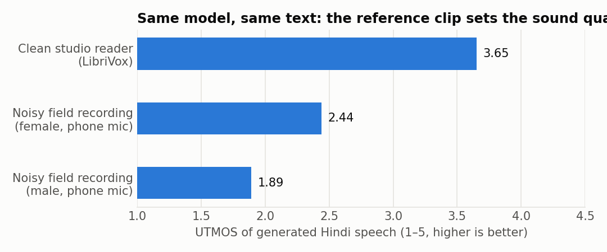
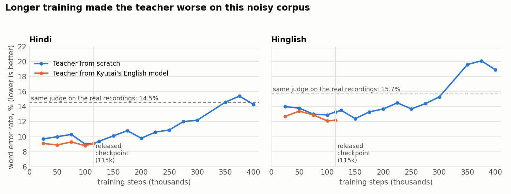

Listen
Same text, same reference voice, three model sizes. Under each player is what a Hindi speech recogniser heard, so you can see the mistakes as well as hear them. Neither reader ever spoke Hindi in our training data: the Hindi and Hinglish here are cross-language clones of an English voice.
The reference clip sets the sound
A cloning model copies everything about its prompt, including the microphone. Below, the same reader, first as recorded, then squeezed to telephone bandwidth with added noise. This is the most useful thing we learned: give the model a clean reference.

How good is it?
Twenty speakers the models never trained on, 150 Hindi and 150 Hinglish sentences, voice prompt taken from a different utterance. Word error rate is measured by AI4Bharat's IndicConformer. The same recogniser scores 14.5% and 15.7% on the real recordings of these sentences, so 9–13% means "as clear as this judge can tell".
| Model | Parameters | Hindi WER | Hinglish WER | Speaker similarity |
|---|---|---|---|---|
| Teacher, 24 layers | 316 M | 9.1% | 13.3% | 0.91 |
| Base, 12 layers (60k steps, still training) | 165 M | 9.0% | 12.1% | 0.91 |
| Lite, 6 layers (100k steps, still training) | 89 M | 9.0% | 12.2% | 0.91 |

How it was made
- 647 hours of speech. 447 h of quality-filtered Hindi from IndicVoices (2,143 speakers, phone recordings) and 200 h of English audiobooks from HiFiTTS-2.
- Hinglish without a Hinglish corpus. IndicVoices transcripts mark borrowed words as
किलो [Kilo]. For half of those sentences we trained on the Latin spelling. - A teacher from random weights, then two students distilled from it with guidance baked in, following Kyutai's published recipe.
- The mistakes are in the log: 63,000 wasted steps on a zeroed codec, a crashed distillation, and a teacher that got worse with more training. Read the experiment log.
Run it
pip install git+https://github.com/AltSlate-Labs/jugnu-pocket-tts huggingface-cli login
from jugnu_tts import Jugnu
tts = Jugnu("lite") # or "base"
voice = tts.clone("my_consented_voice.wav")
tts.speak("आपका order confirm हो गया है",
voice, out="hello.wav")
voice.save("me.safetensors") # reuse later
About 3× faster than real time on a laptop-class CPU. Accept the terms on our Hugging Face page and on Kyutai's first: their codec is fetched with your own account. Write Hindi in Devanagari, English in Latin script, and numbers as words.
What it cannot do yet
- Hindi sounds duller than English: most Hindi training audio is 16 kHz, and the codec loses more detail on it.
- No children's voices, no Indian-accented English and little expressive speech in training.
- Hinglish is harder than Hindi, and some loanwords are mangled. Listen for reschedule above.
- Romanized Hindi (
kal meeting hai) is not supported.
Use it responsibly
- Clone a voice only with the speaker's explicit, lawful consent.
- No impersonation, no fraud, no presenting generated audio as a real recording.
- The weights are gated behind the same prohibited-use terms Kyutai uses.
Standing on other people's work
Kyutai for Pocket TTS, the Mimi codec, the CALM recipe and open training code. AI4Bharat for IndicVoices and IndicConformer. NVIDIA and the LibriVox volunteers for HiFiTTS-2. Harveen Chadha and Vakyansh for the Hindi aligner. Singh, Singh and Kadyan for HiACC. OpenAI Whisper, Microsoft WavLM and UTMOS for evaluation. Full list with licenses.